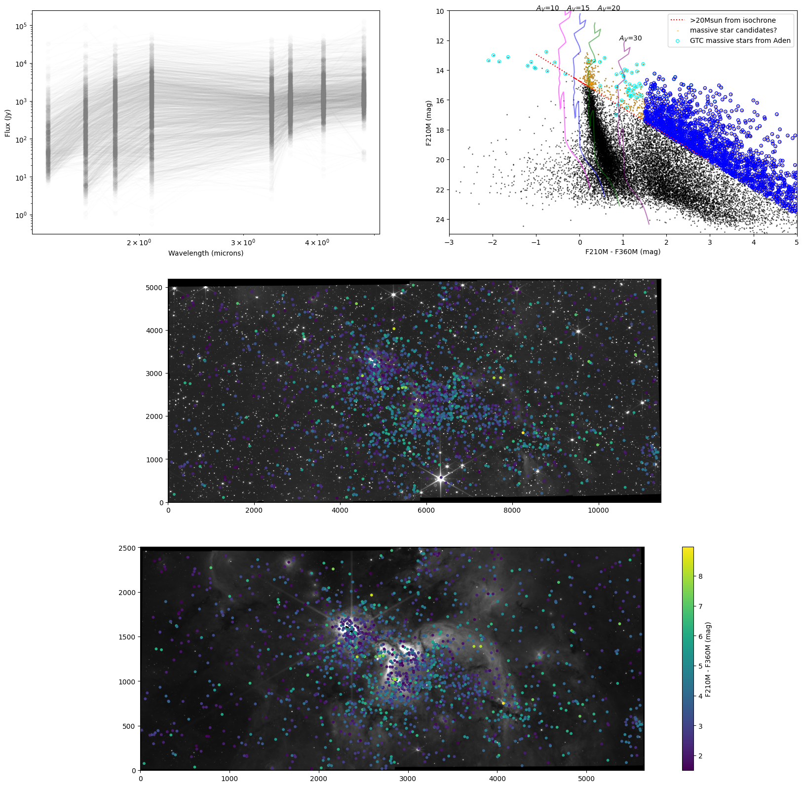

F466N
F405N

F466N
F405N
1-2 mag excess extinction (A4.66μm) at AV~60-90


10% abs. = 0.1 mag
90% abs. = 2.5 mag
Gas absorption is limited to < 0.2 mag
Observed absorption goes to at least 2 mag (though lower limits go higher still)

Blue is Pfβ & Huε, absorbed.
F466N
F405N


F466N: CO, XCN, H$_2$O
F405N: Weak absorption
F405N: Weak absorption

Colors constrain ice mixtures


Smith+ 2025:
Local clouds ~ 3:1:1
H$_2$O:CO:CO$_2$
Local clouds ~ 3:1:1
H$_2$O:CO:CO$_2$
If we adopt those ice models, we can infer the CO ice column density

If we adopt those ice models, we can infer the CO ice column density

Lots of stars: they map a coherent structure
Stars are bluer (icier) toward the center
Stars are bluer (icier) toward the center


Both CO column and abundance are rising with column density


- Smith+ 2025: 27 data points


Now for stranger things: F356W excess absorption

Now for stranger things: F356W excess absorption
is correlated with CO ice
is correlated with CO ice

Simple molecule ices don't match


So what is it?

Same structure as CO (left), but there's less in the outskirts


CO2 ice is also detectable

CO2 ice is also detectable

Models don't match if we assume N(CO$_2$) $\propto$ N(H$_2$)
Probably CO$_2$ ice is processing into other molecules
looking forward
We can do this in (a lot) of other clouds.
e.g., water ice in Sgr B2
e.g., water ice in Sgr B2
looking forward
There is potential to measure metallicity directly from photometry.
SPHEREX can do this better for stars it can resolve.
SPHEREX can do this better for stars it can resolve.


- YSO model grid is testing accretion models
Theo Richardson, 2024 & 2025 - Sgr B2 is forming & fragmenting YSOs - asymmetrically. Large-scale triggering.
Nazar Budaiev, 2024 & 2025 - W51 fragments are dominated by most massive. Colorful feedback to be understood.
Taehwa Yoo, 2025 - JWST measures ice abundance across the galaxy.
Savannah Gramze, 2025 - We can measure metallicity with ice
Summary
Salt is seen in disks around HMYSOs- It is not detected in the ISM (maybe Sgr B2)
- Salt is not seen in outflows (but maybe at the interface between disk & outflow)
- NaCl and KCl are correlated with water, SiS, and PN.
- Salt is uncorrelated with COMs and ionized gas.
- Salt excitation is weird.
- There are many observable and useful transitions between 5 and 120 GHz
Salt (and water, SiS, and PN) questions
- Where do we see salt?
- Why isn't it ubiquitous? (it's not)
- Where does the salt come from?
- What excites it?
- Where else do we (should we) see it? Protoplanetary disks? AGN?
- What other species might coincide with brine?
Where do we see salts?
- Red supergiant atmospheres
- (CRL2688, IRAS+10216, VY CMa, IK Tau)
- Massive young star disks (at least 9; this talk)
- aside: there more HMYSO disks than evolved stars with reported salt now
- Exoplanet atmospheres?
- (hypothesized in hot jupiter clouds)
Orion Source I
a disk around a 15 M⊙ YSO
Salt: NaCl
Brinary disks: NaCl moment 0 images


Brine lines measure dynamical mass
NaCl v=1 J=18-17
Stack of v=[0,1] Ju=[18,17]
SrcI


15 M⊙
30 M⊙
40 M⊙
Ginsburg+ 2019,
Maud+ 2019


Big, R=230-850 au (Ilee+ 2018)

detections


nondetections


What will the ngVLA see?


Non-LTE (RADEX) calculations ...

... hint that ngVLA-band lines may be brighter
(if density is too low to populate higher states)
What will the ngVLA see?

What will the ngVLA see?

It's worse in young sources
Decin+ 2016 suggest thermal desorption will remove all salt from grain surfaces for $T_D > 100-300$ K, depending on assumed binding energy
If $T_D>300$ K is all that is required, why do we not see salts in hot cores? (see talk by Desmond Jeff)


$T\gtrsim200$K → $r\lesssim 2$ au for L⊙ stars
But the gas temperature required for gas-phase salts could be anywhere between 100 < T < 600 K.
What others might exist in these regions?
FeS? FeO? LiCl? HCl? AlCl? AlOAlO?
What's next for salts?
Deep VLA observations of low-J lines in Orion
Salt backup slides
Beyond here are bonus slides, best accessed via the index
(there are some repeats)

Comparison of Sgr B2 (one cloud, 200 pc2) with


My story of high-mass star formation:
Theo Richardson's models turn this story into predictions


Theo Richardson

My story of high-mass star formation:
No massive starless cores in ALMAGAL or ALMA-IMF
My story of high-mass star formation:
My story of high-mass star formation:

0.25-0.5 M⊙ accreted
We don't know the frequency of these events; they are likely bright transients, but most often heavily dust-obscured


My story of high-mass star formation:
Many stars in clusters form from cooked gas.
Cooking may suppress further fragmentation.

 Desmond Jeff+ 2024
Desmond Jeff+ 2024
Ten hot cores in Sgr B2 DS
outside the massive clusters


The Brick isn't forming many stars

The Brick is icy
The Brick is icy

Building new tools: Spectral Line Survey of The Brick


Salt backup slides
What's next for salts?
(VLA 22A-022, 23A-016)
Deep VLA observations of low-J lines in Orion


Classic HII region feedback:
The Jeans Mass MJ is the mass where gravity and thermal pressure are balanced.
MJ ∝ T3/2 ρ−1/2


Large scales again:

ALMA enables protostar counting in


What have we learned about brinaries?
- Reasonably common: ~6-9 known so far, ~15 HMYSO candidates examined
- Y: SrcI, G17, IRAS16547 A and B, G351mm1 and mm2, W33A?, NGC6334I?
- Ginsburg+ 2019, Ginsburg+ submitted, Tanaka+ 2020
- N: I16523, I18089, G11, G5, NGC6334IN, S255IR NIRS3, G333.23-0.06, I18162
- Y: SrcI, G17, IRAS16547 A and B, G351mm1 and mm2, W33A?, NGC6334I?
- Coincide w/line-poor sources
- Not hot cores; little mass reservoir?
- Or is the core resolved out?
- Trace reasonably symmetric disks (in the well-resolved cases)
- Though there remains controversy: there's at least one case where the brinary emission is along the apparent outflow
Compare: G17 vs G11.92
G17: Brinary
Hot (ionizing) photosphere. Circular disk.
G11.92: Not-Brinary
Line-rich!Big, R=230-850 au (Ilee+ 2018)
Compare: G17 vs GGD27
G17: Brinary
Hot (ionizing) photosphere. Circular disk.
GGD27: Not-Brinary
SO, CH3OH lines. But line-poor!
What molecules correlate (in our sample of 23)?
Resolution is a (weak) predictor of salt detection
The gallery of brinaries with moment maps
Current measurements give $T_{rot}\sim50-150$ K $\rightarrow\sim$few K for ngVLA.
(but, $T_{vib}\sim1000$ K )
... hint that ngVLA-band lines may be brighter
(if density is too low to populate higher states)
Open question: What excites salt emission?
- Key to make specific predictions of line brightness
- Requires good models of disk vertical structure around high-mass stars
Why are rotational/vibrational temperatures different?
Why are rotational/vibrational temperatures different?
VY CMa vs Orion Src I
Both have $T_{vib}-T_{rot}$ disagreementIt's worse in young sources


A contrived model
When does salt enter the gas phase?
Depends on the binding energy of NaCl to grain surfaces.Decin+ 2016 suggest thermal desorption will remove all salt from grain surfaces for $T_D > 100-300$ K, depending on assumed binding energy
(this range is consistent with VY CMa observations)
If $T_D>300$ K is all that is required, why do we not see salts in hot cores? (see talk by Desmond Jeff)
When does salt enter the gas phase?
If $T_D>300$ K is all that is required, why do we not see salts in hot cores? (see talk by Desmond Jeff)
When does salt enter the gas phase?
At atmospheric pressure: T~500-600K (Woitke+ 2018)
Briny emission should occur in low-mass disks too
$T\gtrsim200$K → $r\lesssim 2$ au for L⊙ stars
But the gas temperature required for gas-phase salts could be anywhere between 100 < T < 600 K.
Does salt have friends?
NaCl, KCl, SiS, PN, and H2O coincide.(AlO is also present in Orion)
What others might exist in these regions?
FeS? FeO? LiCl? HCl? AlCl? AlOAlO?
Summary
Salt is seen in disks around HMYSOs- NaCl and KCl are correlated with water, SiS, and PN.
- Salt is not seen in outflows or molecular clouds.
- It is uncorrelated with COMs and ionized gas.
- Its excitation is weird.
- There are many observable and useful transitions between 5 and 120 GHz
Questions:
- Where does the salt come from?
- What temperature regions?
- What radii? Vertical scales
- What excites it?
- Why is $T_{vib}\sim1000$ but $T_{rot}\sim100$ K?
- Why isn't it ubiquitous?
- Where else do we (should we) see it?
Deep VLA observations of low-J lines in Orion
Possible future uses for these lines?
- Metallicity measurement in deeply embedded star-forming environments? (at least of Na, K, Cl)
- Disk kinematics of high-mass stars, which are otherwise unobservable (τ>1 at mm wavelengths)
- Disk kinematic measurements at early stages?
- Probe dust destruction (and/or formation?) in outflows, disks?
- Probe radiation environment around HMYSOs?
Why do we see salt?
- Previously, NaCl & KCl only in AGB* atmospheres,
associated with dust formation - Most likely dust destruction here
Dust destruction happens immediately as the outflow is launched? - What about excitation? We see vibrationally excited lines, which are not seen in AGB*s
We do not have a viable model to explain these temperatures
A strong non-blackbody radiation field from 25-40 µm may explain them.
Forsterite (MgSiO4) has some emission bands in that range. Maybe?
Star Formation oversimplified
Ṁ
L / M
The CMZ gas is constantly replenished, as seen in "Extreme Velocity Features"


How does gas flow into the Galactic Center?
We think the ring-like feature formed in this simulation is a good model for the CMZSormani+ in prep
The CMZ:
CMZOOM (SMA survey) & early ALMA surveys started to map high-mass star formation
Battersby+ 2020,
Hatchfield+ 2020,
Callanan+ 2023,
Hatchfield+ 2024
The proto-Super Star Cluster Sgr B2 dominates SF in the CMZ
Two $>10^4$ M$_\odot$ clusters within $<3$ pc; $10^6$ M$_\odot$ of gas in $\sim10$ pcZoom in to Sgr B2
The proto-Super Star Cluster Sgr B2 dominates SF in the CMZ
Two $>10^4$ M$_\odot$ clusters within $<3$ pc; $10^6$ M$_\odot$ of gas in $\sim10$ pcThe proto-Super Star Cluster Sgr B2 dominates SF in the CMZ
Two $>10^4$ M$_\odot$ clusters within $<3$ pc; $10^6$ M$_\odot$ of gas in $\sim10$ pcComparison of Sgr B2 (one cloud, 200 pc2) with
ALMA-IMF (15 SFRs, 53 pc2)
3mm catalog → Simplistic mass inferences
At this sensitivity, all are M>8⊙ YSOs
Mtot = 8 M⊙
∫0∞ M N(M) dM
∫8∞ M N(M) dM
∫8∞ M N(M) dM
= 96 M ⊙
The "Bound Cluster Fraction" is higher in CMZs
Γ is the fraction of stars forming in bound clusters
Galaxy averages
CMZ prediction
Sgr B2 data
Sgr B2 data
Higher CMF + top-heavy cluster IMF = top-heavy CMZ IMF
The CMZ: ACES
The first complete survey of the CMZ with 2.4" resolution (previous best was ~15")
between ~2 microns and 10 cm.
between ~2 microns and 10 cm.
Results forthcoming! Continuum, line data papers, catalogs, kinematic analyses, filament identifications all in prep....
... but the first result is unrelated (?) to star formation:
Summary
Dynamical interactions are common where stars form
Most stars form in regions unlike the solar neighborhood
Weird things abound
and they are more common in clusters. Environment matters!
Most stars form in regions unlike the solar neighborhood
- Shallower Core Mass Function in richer SF regions
- The Galactic Center forms more stars in clusters
Weird things abound
- Gas-phase salt is prominent in disks around high-mass stars
- There's an extremely broad linewidth, compact source in the Galactic Center
Astrochemistry:
Hot Cores
Ices
Line Surveys
Hot Cores
Ices
Line Surveys
F200W F182M F115W
F212N F200W F182M
F356W F212N F200W
F410M F356W F212N
F444W F410M F356W
F466N F444W F410M
keflavich.github.io/talks/EPOS_2024.html for more about the Brick
Hot Cores
Hot cores are chemically rich sites of high-mass star formation.
Bounded at ~100 K
Bounded at ~100 K
Hot Cores
Hot cores are chemically rich sites of high-mass star formation.
Accretion is ongoing
Accretion is ongoing
all MYSOs make hot cores
Hot cores:
- 76 HCs in ALMA-IMF sample from CH3OCHO (Bonfand+ 2024; left, Brouillet+ 2022)
- ~10% of ALMA-IMF continuum cores are within hot cores
- 60 from ALMA-ATOMS (Qin+ 2022)
- > 15 in Sgr B2 (Jeff+ 2024, Bonfand+ 2017)
-
They start as normal-ish looking seeds:
there is no massive prestellar core.
[ALMA-IMF, ALMA-ATOMS, ALMAGAL all confirm this] - They accrete for some time, during which their core must be replenished
- They have a disk most of this time, but it is not a "classic" T Tauri disk, it's small and constantly changing directions: accretion is chaotic
- Massive YSOs spend most of their accretion mass (maybe time) luminous, cooking their surroundings: all MYSOs make hot cores
Theo Richardson
Including source count and flux predictions spanning whole clusters
Richardson+ in prep
See Josh Peltonen's talk next...
-
They start as normal-ish looking seeds:
there is no massive prestellar core.
[ALMA-IMF, ALMA-ATOMS, ALMAGAL all confirm this] - They accrete for some time, during which their core must be replenished
- They have a disk most of this time, but it is not a "classic" T Tauri disk, it's small and constantly changing directions: accretion is chaotic
- Massive YSOs spend most of their accretion mass (maybe time) luminous, cooking their surroundings: all MYSOs make hot cores


(stuff above $\sim10 \mathrm{~M}_\odot$ is protostellar)
-
They start as normal-ish looking seeds: there is no massive prestellar core.
[ALMA-IMF, ALMA-ATOMS, ALMAGAL all confirm this] - They accrete for some time, during which their core must be replenished
- They have a disk most of this time, but it is not a "classic" T Tauri disk, it's small and constantly changing directions: accretion is chaotic
- Massive YSOs spend most of their accretion mass (maybe time) luminous, cooking their surroundings: all MYSOs make hot cores
Massive, hot cores exist
MYSOs do have cores, those cores must grow in parallel
~200 $\mathrm{~M}_\odot$ hot core
~200 $\mathrm{~M}_\odot$ hot core
-
They start as normal-ish looking seeds: there is no massive prestellar core.
[ALMA-IMF, ALMA-ATOMS, ALMAGAL all confirm this] - They accrete for some time, during which their core must be replenished
- They have a disk most of this time, but it is not a "classic" T Tauri disk, it's small and constantly changing directions: accretion is chaotic
- Massive YSOs spend most of their accretion mass (maybe time) luminous, cooking their surroundings: all MYSOs make hot cores

Chaotic accretion in another ~200 M$_\odot$ hot core
The outflow (& disk) around W51 North changed direction by ~50 deg
in < 100 years.
0.25-0.5 M⊙ accreted
We don't know the frequency of these events; they are likely bright transients, but most often heavily dust-obscured
DIHCA: Digging into the Interior of Hot Cores with ALMA
Olguin+ 2025/in prep: kinematic mass measurements of 31 objects with $M>8 M_\odot$
The 'disks' are messy.
The 'disks' are messy.
-
They start as normal-ish looking seeds: there is no massive prestellar core.
[ALMA-IMF, ALMA-ATOMS, ALMAGAL all confirm this] - They accrete for some time, during which their core must be replenished
- They have a disk most of this time, but it is not a "classic" T Tauri disk, it's small and constantly changing directions: accretion is chaotic
- Massive YSOs spend most of their accretion mass (maybe time) luminous, cooking their surroundings: all MYSOs make hot cores
- Massive YSOs spend most of their accretion mass (maybe time) luminous, cooking their surroundings: all MYSOs make hot cores
Many stars in clusters form from cooked gas.
Cooking may suppress further fragmentation.
Hot cores in the Galactic center: Distributed MYSOs
Desmond Jeff+ 2024
Ten hot cores in Sgr B2 DS
outside the massive clusters
TG ~ 200-500 K
M ~ 200 - 2900 M⊙
(proto-O-stars / clusters)
~5% of cores are hot cores
M ~ 200 - 2900 M⊙
(proto-O-stars / clusters)
~5% of cores are hot cores
Sgr B2 DS: More massive cores than the Disk
Hot Cores
Hot cores are chemically rich sites of high-mass star formation.
They are only found in the more distant disk & CMZ regions
They are only found in the more distant disk & CMZ regions
Hot Cores
Hot cores are chemically rich sites of high-mass star formation.
They are only found in the more distant disk & CMZ regions
They are only found in the more distant disk & CMZ regions
Alyssa Bulatek: Spectral Line Survey of The Brick
- Dasar line at 107 GHz
- CH3OH only in absorption
- Occurs at density $n<10^6 \mathrm{cm}^{-3}$
Some notes on Data Scale
Brinary disks
The SrcI disk has gas-phase salt (NaCl, KCl) and water (H2O).
So it's brine.
(blame Adam Leroy for this term)
IRAS16547A/B (Tanaka+ 2020)
have (unresolved) salt water disks
Brine lines measure dynamical mass
NaCl v=1 J=18-17
Stack of v=[0,1] Ju=[18,17]
SrcI
15 M⊙
30 M⊙
40 M⊙
What have we learned about brinaries?
- Neither common nor rare: 10 known so far, >23 HMYSO candidates examined
- Y: SrcI, G17, IRAS16547, NGC6334I, G351.77, W33A
- Ginsburg+ 2019, Tanaka+ 2020, Ginsburg+ 2022
- N: I16523, I18089, G11, G5, NGC6334IN, S255IR NIRS3, G333.23-0.06, I18162
- Ginsburg+ 2022
- Y: SrcI, G17, IRAS16547, NGC6334I, G351.77, W33A
- Coincide w/line-poor sources
- Not hot cores; little mass reservoir?
- Trace reasonably symmetric disks (in the well-resolved cases)
- there is some ambiguity b/w disk & outflow in one case
Compare: G17 vs G11
G17: Brinary
Hot (ionizing) photosphere. Circular disk.
G11: Not-Brinary
Molecule rich, kinematically messy & extended
Possible future uses for these lines?
- Metallicity measurement in deeply embedded star-forming environments? (at least of Na, K, Cl)
- Disk kinematics of high-mass stars, which are otherwise unobservable (τ>1 at mm wavelengths)
- Disk kinematic measurements at early stages?
- Probe dust destruction (and/or formation?) in outflows, disks?
- Probe radiation environment around HMYSOs?
Why do we see salt?
- Previously, NaCl & KCl only in AGB* atmospheres,
associated with dust formation - Most likely dust destruction here
Dust destruction happens immediately as the outflow is launched? - What about excitation? We see vibrationally excited lines, which are not seen in AGB*s
We do not have a viable model to explain these temperatures
A strong non-blackbody radiation field from 25-40 µm may explain them.
Forsterite (MgSiO4) has some emission bands in that range. Maybe?
Deep VLA observations of low-J lines in Orion
W51 e2e: Too optically thick at 1mm to measure disk
CS v=0 J=1-0 and v=0 J=2-1 masers may trace the disk?
M = 24-10+12M⊙
if the masers trace a disk
if the masers trace a disk
CS maser conditions
van der Walt+ 2020- Top: CS J=1-0, Bottom: CS J=2-1
- Red: Consistent w/W51e2e observations
- Masers do not coexist; require different specific CS column
(N2-1=1015.6, N1-01016.1 cm-2) - Require high abundance (XCS > 10-5)
- Hot (300-500 K), moderate-density (n~105 cm-3): Disk surface? Or outflow cavity wall?
How is star formation in high-mass clusters different?
- Feedback from one star affects many in clustered regions
- IMF depends on density, feedback, global conditions (e.g., Jones & Bate 2018, Narayanan & Dave 2012)
- Total star formation efficiency is higher.
- Collisions assemble the most massive stars?
(e.g., Fujii+ & PZ 2013, but see Moeckel & Clarke 2011)
Cartoon of high- and low-mass star formation
Main difference: massive stars affect their surroundings
Classic HII region feedback:
O-stars clear out their environment
Accreting massive young stars affect their environment
Accreting massive young stars affect their environment
Accreting massive young stars affect their environment
The characteristic fragmentation scale
The Jeans Mass MJ is the mass where gravity and thermal pressure are balanced.
MJ ∝ T3/2 ρ−1/2
The characteristic fragmentation scale is larger
Jeans Mass
MJ ∝ T3/2 ρ−1/2
Feedback affects dense gas
ALMA + VLA + GBT together give multiple temperature probes on multiple scales.
High-mass protoclusters are filled with gas warmed by feedback.
Ginsburg+ 2017, Machado+ in prep
The cartoon in the context of HMSF
These high mass cores suppress low-mass star formation (LMSF) in their vicinity.
They reduce or prevent LMSF in the cores of stellar clusters.
More extreme: 'cooperative accretion'
With enough high-mass stars forming concurrently, massive stars may prevent fragmentation entirely.
If they still have enough gravity to bind the gas, the remaining gas is forced onto the most massive gravitational sinks.
If they still have enough gravity to bind the gas, the remaining gas is forced onto the most massive gravitational sinks.
Large scales again:
What governs the star formation rate?
Turbulent ISM models
Turbulent ISM models
Turbulent ISM models
Measuring Line Profiles
SCOUSE uses pyspeckit for manual fits. Gausspy+ is machine-learning trained. We're exploring more automated approaches. ALMA enables protostar counting in
distant, massive clouds
Sgr B2: the most massive & star-forming cloud in the Galaxy
How do we learn about clustering? The IMF?
- Count objects:
- Cores are (sometimes) countable
- Protostars are countable
YSO counts let us investigate thresholds
Local cloud studies support the idea of a gas density threshold for star formation
Thresholds are used in simulations to say
"if gas reaches this density, turn it into stars"
"if gas reaches this density, turn it into stars"
Compare YSO counts in Sgr B2 and the CMC
Is there a threshold?
Is there a threshold?
A threshold separates Sgr B2 from The Brick
Walker+ 2021
3mm Luminosity Function
What are the sources?
At this sensitivity, all are M>8⊙ YSOs
Mass measurements: Optically thin, isothermal dust
TD estimated with PPMAP fits to Herschel data
(~6" resolution)
Simple models assuming TD ~ f(M) don't change CMF much
We can do better with YSO models and TG measurements
From YSO counts to the IMF?
How do we measure the CMF if the cores all have YSOs in them?
Mapping accretion histories
(left: IS, right: TC)
onto the Robitaille 2017 model grid
Key addition:
Envelope mass!
(left: IS, right: TC)
onto the Robitaille 2017 model grid
Key addition:
Envelope mass!
SPICY-ALMA-IMF:
ALMA-IMF:

ALMA-IMF:


 Allison Towner
Allison Towner


Nazar has cataloged 100s of new masers in Sgr B2 (VLA 18A-229)

A quick look at what's coming: Nazar has cataloged 100s of new masers in Sgr B2 (VLA 18A-229)


VLA 19A-154
Orion Source I


FOV: 0.07 pc (16000 AU)
Likely the only gas-rich protocluster with a complete YSO census:


0.25-0.5 M⊙ accreted
We don't know the frequency of these events; they are likely bright transients, but most often heavily dust-obscured
Questions in Star Formation
The Millimeter Ultra-Broadline Object: An open mystery


The MUBLO: Millimeter Ultra Broad-Line Object
Broad-Line: FWHM~160 km s-1

Broad-Line (broader than the CMZ, but only <2")
Weird chemistry (no SiO?!?)
Dusty
...and cold, using SO LTE model

No NIR counterpart

No counterparts!


Richardson-enhanced Robitaille+ 2017 model grid
fits including ALMA data
UG team:
Sydney Petz
Brice Tingle
Morgan Himes

Brice Tingle

Morgan Himes

Our Galaxy's center, the CMZ, has denser gas than the Galactic average
Cold Dust
Hot, ionized gas
Hot dust/PAHs
Hot, ionized gas
Hot dust/PAHs
ALMA-IMF:
The CMF is shallow (top-heavy) in HMSFRs
ALMA-IMF:
The CMF is shallow, and steepens with time?
Louvet+, subm
ALMA-IMF Line Data: 320 cataloged SiO Outflows
Allison Towner
Resolved, structured SiO outflows
5-60% of SiO at low-velocities:
Relic outflows?
Relic outflows?
ALMA-IMF Line Data: CH3CN, CH3CCH
Temperature measurements with per-pixel rotation diagrams
Jeff+ in prep (CH3OH in CMZ), Wyrowski+ in prep (CH3CN in ALMA-IMF)
Hot cores in ALMA-IMF: From rare objects to a population
Cores with line forests
TD>50 K
TG ≳100K
TD>50 K
TG ≳100K
Hot core overview:
- 9 HCs in W43-MM1 (Brouillet+ 2022)
- ~60-70 HCs in ALMA-IMF sample from CH3OCHO (Bonfand+ 2024; left)
- ~10% of continuum cores are within hot cores
- CH3CN temperature maps (Wyrowski+ in prep)
ALMA-IMF Key Results summary
- Rich, science-ready data (Ginsburg+ 2022, Cunningham+ 2023)
- CMF is top-heavy in HMSFRs (Pouteau+ 2022, Louvet+ 2024)
- Core fragmentation is not 1-to-1 [WIP] (Budaiev+ (CMZ), Yoo+ (W51), Louvet+ (W43), ...)
- 10% of $M\gtrsim1\mathrm{~M}_\odot$ cores are hot cores (Brouillet+ 2022, Bonfand+ 2024, Wyrowski+)
- Outflow feedback builds over time, sets initial conditions for many cores (Nony+ 2022, Towner+ 2023)
What's next?
Nazar has cataloged 100s of new masers in Sgr B2 (VLA 18A-229)
Ammonia Masers:
Derod Deal
VLA 19A-154
the gas & dust where stars form: Orion
the gas & dust where stars form: Orion
the gas & dust where stars form: Orion
the gas & dust where stars form: Orion
The Integral-Shaped filament has $\sim10^4$ M$_\odot$ of gas over $\sim$10 pc Kong+ 2018 CARMA-Orion surveythe gas & dust where stars form: Orion
The Orion Molecular Cloud is the closest (d$\sim400$ pc) site of high-mass star formationthe gas & dust where stars form: Orion
BOOM! Orion Source I
a disk around a 15 M⊙ YSO
Salt: NaCl
Temperature?
Temperature?
A contrived model
Observing the Keplerian rotation profile of a disk is the most direct way to measure a protostar's mass
(we can only see the disk, not the star itself)
Salt is a tool to weigh HMYSOs
Keplerian orbits measure mass
More Brinary disks
Ginsburg+ 2023: New sample. Miriam Garcia Santa-Maria is following up
Briny chemistry:
Salts, SiS, SiO, and PN are seen together [but limited spectral coverage]
The Orion Molecular Cloud Core is a dense cluster

FOV: 0.07 pc (16000 AU)
Likely the only gas-rich protocluster with a complete YSO census:
ALMA (Otter), VLA (Ballering, Wright), Chandra, JWST....
N*OMC(Otter+ 2021) = 1.6 x 105 pc-3
N*ONC(Otter+ 2021) = 0.6 x 105 pc-3
N*ONC(Hillenbrand+ 1998) = 0.2 x 105 pc-3
Most stars form in denser regions
NGC 1333, an embedded low-mass cluster
Lada & Lada 2003: >70% in embedded clusters
500 years ago, four or more stars were in a multiple system
The old picture involved source n, but it's not moving fast enough
Clusters are sites of interactions & collisions
The BN/I/x interaction is the poster case of accretion ended by dynamical interaction.

{kind=link}
...even though Orion is only a medium-mass proto-open-cluster
Interactions are (probably) more common in high-mass clusters
The outflow (& disk) around W51 North changed direction by ~50 deg
in < 100 years.
0.25-0.5 M⊙ accreted
We don't know the frequency of these events; they are likely bright transients, but most often heavily dust-obscured
Big Questions in Star Formation
I'll highlight incremental progress toward answering some of these
spiced with a few intriguing discoveries
- How does the IMF vary, and what controls its variation?
- What controls the star formation rate in galaxies?
- When and how do planets form?
- How does stellar clustering affect each of these?
- What initiates star formation?
- What Processes Govern Protostellar Evolution and Determine the Stellar Mass and Rotation Rate?
- How do Massive Stars Form?
- What is Lifetime of Molecular Clouds (and the Duration of Star Formation)?
- What Physics Determines the Initial Mass Function?
- What Physics Regulates the Rate & Efficiency?
- What Role Does Environment Play in Star and Planet Formation?
- What Physics Regulates Star Formation in Clusters?
- How homogeneous are clusters?
- What is the role of feedback (outflow, radiation, wind, etc) in star formation?
- What is the role of disks in star and planet formation?
- How do multiple systems form?
FWHM = 160 km s-1 [CS & SO], mm-only object. ???
Class vs Stage
Class is observationally defined.
Stage is theoretical.
Richardson et al 2025 takes a deep dive into the definition of Class 0/I and Stage 0/I
Stage 0: $M_*(t) < 0.5 M_{*,f}$
(most of the mass is still in the core/envelope, but that's not part of the definition)
Stage I: $M_*(t) > 0.5 M_{*,f}$
Class 0 is a poor proxy for Stage 0.
Stage is theoretical.
Richardson et al 2025 takes a deep dive into the definition of Class 0/I and Stage 0/I
Stage 0: $M_*(t) < 0.5 M_{*,f}$
(most of the mass is still in the core/envelope, but that's not part of the definition)
Stage I: $M_*(t) > 0.5 M_{*,f}$
Class 0 is a poor proxy for Stage 0.
MIRI image taken 2025-09-02
F187N F182M F150W
F210M F187N F182M
F212N F210M F187W
F300M F212N F210M
F360M F300M F212N
F410M F405N F360M
F466N F410M F300M
F466N F410M F405N
F480M F410M F360M
F480M F466N F410M
